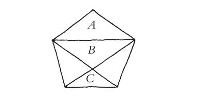
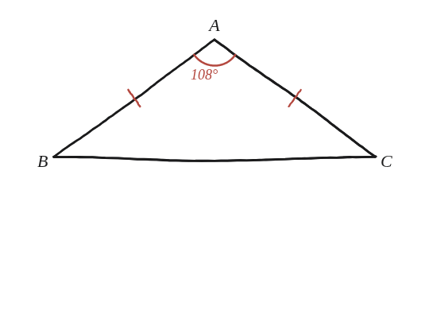
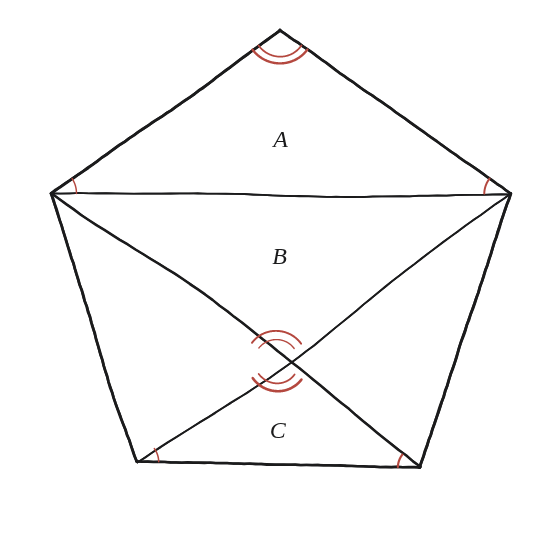

Per què els tres triangles són semblants? Per què els més grans són idèntics?

Dues preguntes, dues eines diferents
Igual que a la Qüestió 8c, aquí n'hi ha dues, i cadascuna es respon amb una eina diferent: que els tres triangles marcats (A, B, C) siguin semblants es demostra comparant angles; que els altres dos —els triangles laterals, més grans, sense etiquetar— siguin idèntics es demostra per simetria de mirall, no per angles.
El triangle de dalt: isòsceles, i un angle ja conegut
El triangle A —el de dalt, format pel vèrtex superior del pentàgon i els seus dos veïns— té dos costats que són costats del pentàgon: és isòsceles. El seu angle superior és, directament, un angle interior del pentàgon regular, que ja es pot calcular amb la fórmula (n−2)×180°/n de la Qüestió 4: amb n=5, val 108°. Com que els altres dos angles del triangle isòsceles són iguals entre si i els tres han de sumar 180°: 2x+108°=180°, x=36° cadascun.

El mateix conjunt d'angles, tres vegades
Amb aquest angle de 108° i els dos de 36° ja es pot anar propagant la resta, triangle a triangle, imposant sempre que els tres angles sumin 180° i aprofitant la simetria de la figura. Compte amb una drecera que sembla bona i no ho és: no tots els angles que formen dues diagonals en creuar-se fan 108°. Al punt on es creuen, els quatre angles són 108°, 72°, 108° i 72° —dos i dos, com sempre que dues rectes es tallen. Els que valen 108° són els que miren cap amunt i cap avall (els de B i C); els de 72° miren cap als costats i pertanyen als dos triangles grans sense etiqueta. Fent-ho amb cura, surt que els tres triangles marcats (A, B, C) tenen exactament el mateix conjunt de tres angles: 108°, 36° i 36°. Amb els tres angles iguals, els tres triangles són semblants (criteri AAA), encara que no tinguin la mateixa mida.

Els dos triangles grans: no per angles, per simetria
Per als dos triangles laterals més grans —els que no porten etiqueta— no cal repetir l'argument dels angles: n'hi ha prou d'observar que un pentàgon regular té un eix de simetria que passa pel vèrtex superior i pel punt mitjà del costat de baix. Aquest eix reflecteix el pentàgon sobre si mateix, i amb ell reflecteix el triangle lateral esquerre exactament sobre el triangle lateral dret. Dues figures que una simetria de mirall intercanvia sense alterar la figura de partida són, per força, idèntiques —no només semblants: exactament la mateixa mida i forma.
Els triangles A, B i C són semblants perquè tots tres comparteixen exactament el mateix conjunt d'angles (108°, 36°, 36°), que es dedueix marcant primer l'angle interior del pentàgon amb la fórmula de la Qüestió 4 i repartint la resta per la condició que sumin 180° a cada triangle. Els dos triangles grans sense etiqueta, en canvi, no fan 108°-36°-36°: fan 72°-72°-36°, i és el triangle que retrobaràs a la Qüestió 33. Els dos triangles laterals més grans són idèntics (no només semblants) perquè l'eix de simetria del pentàgon els intercanvia exactament l'un per l'altre.
Comprovació
En un pentàgon regular de costat 1, els triangles A, B i C tenen tots els mateixos dos angles (36° i 108°) comprovat per dibuix a escala o per coordenades —el mateix conjunt exacte per als tres, confirmant la semblança.